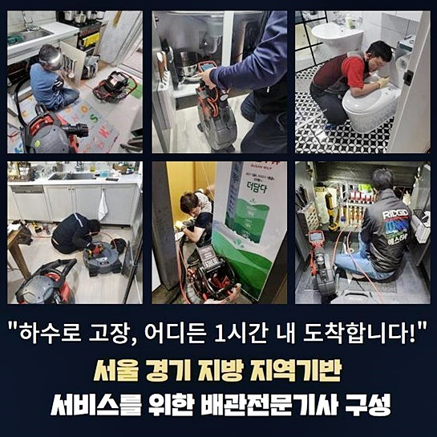
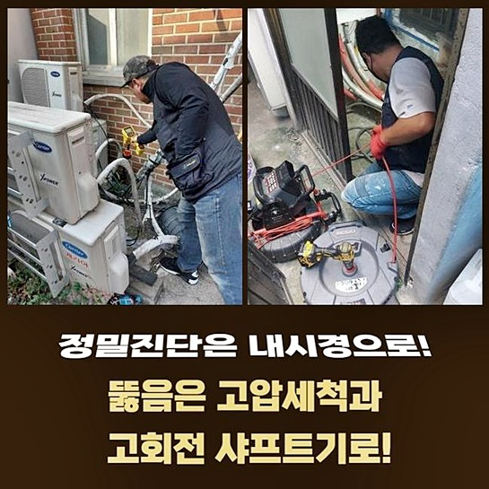
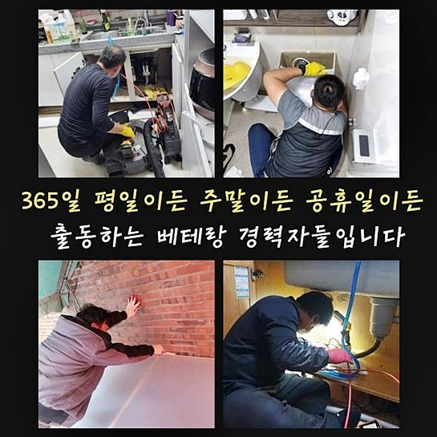
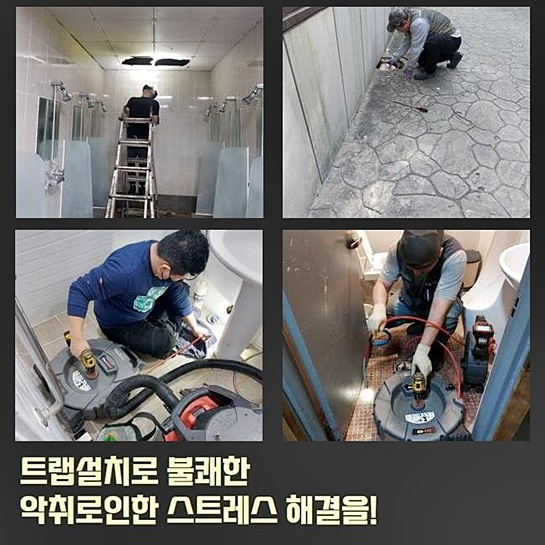
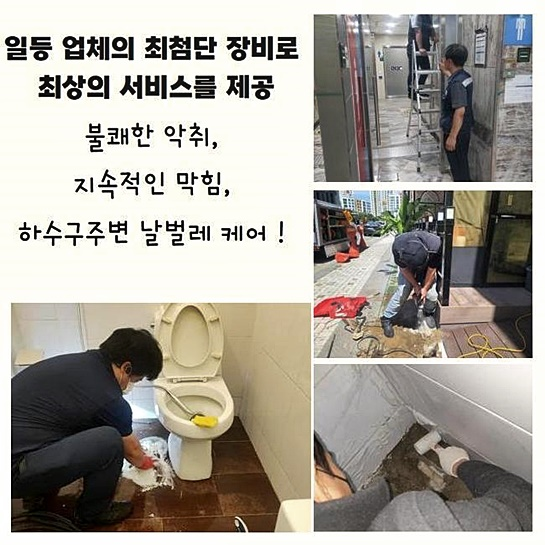
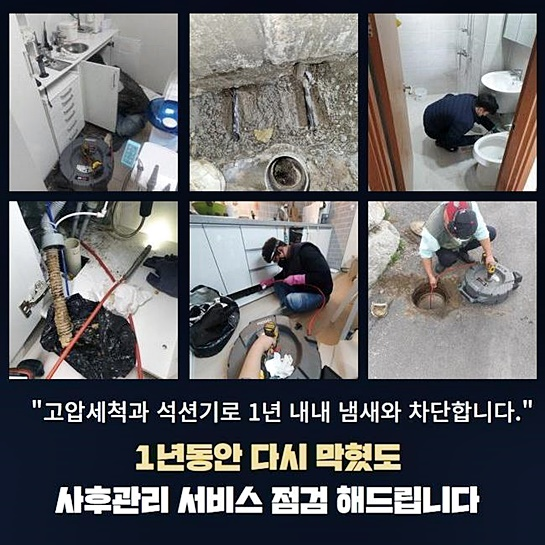
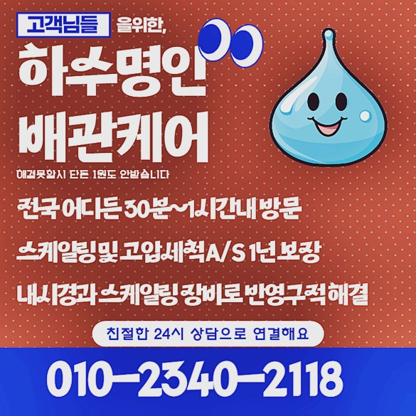

🏠 용인 유림동싱크대배수관역류 원삼면 배관내시경카메라 설비업체
용인 싱크대막힘 전문 시공 후기

📋 작업 개요
- 위치: 용인
- 서비스 유형: 싱크대막힘, 하수구막힘, 배관막힘, 집수정막힘, 누수수리, 역류해결, 뚫는업체, 배관청소, 고압세척, 설비공사, 배관보수, 악취차단
- 작업 일시: 2024. 9. 6. 4:16
- 업체명: 하수구수사대 (010-5615-2118)
🔍 문제 상황
용인 유림동싱크대배수관역류 원삼면 배관내시경카메라 설비업체
정갈한 식사를 방문객에게 제공해드리는 중식당에서 물을 쓸 수 없는 일이 벌어진다면 매출에 엄청난 피해를 야기하게 됩니다
물을 사용하는 것이 불가피해지면 음식준비를 할 수 없을 뿐더러 위생상태에도 큰 어려움이 생기게 됩니다
이에 이러한 상태는 긴급히 해결할 필요가 있습니다
최근 저희업체로 고객 한 분이 문의주셨는데요
의뢰인은 꽤 넓은 중식당을 운영하셨는데 하수관 막힘현상이 발생하여 신속하게 방문하기를 희망하셨어요
발생장소에 방문드려 막힘 사태를 검사하기 시작하였습니다
배수관을 열어보았더니 배수관 트랩부속품이 조립된 상태였는데 이 곳의 물빠짐이 원활하지 않아 막힘 현상이 생겼습니다
이건 레스토랑 매출에 지대한 타격을 유발할 수 있는 주요한 문제이므로 빠른 대응이 필요한 상황이었어요
의뢰인은 혹시나 대대적인 작업으로 인해 여러날 동안 식당영업을 중단해야 할까봐 매우 불안해하셨어요

🔎 원인 분석
💡 전문가 진단: 정밀 진단 장비를 사용하여 슬러지의 고착 여부를 판명하고 타격/세척 작업을 실시했습니다.
하지만 저희업체는 하수구 역류상태를 해결하면서 그리스 트랩장치에 배수펌프장비를 장착하는 조치를 한번에 실행한다면 당일 내에 모든 문제사항들을 수리해 드릴 수 있다고 설명했어요
일반적인 막힘을 뚫어내는 것 외에도 하수배관 트랩부속을 교체해야 하는 상황도 자주 보곤합니다
오늘의 현장 또한 그러한 경우였어요
일단 하수배관 막힘 때문에 배수관 안에 한 가득 차있는 오수를 제거하려고 석션장치로 흡수작업을 수행했습니다
그런 뒤에 더욱 정확하게 막힘 상황의 요인을 파악하고자 배수구 내시경 장치를 삽입하여 배수라인 안쪽을 화면장치로 점검했어요
하수파이프 내시경장비로 배수라인 안쪽을 살펴보니 기름 덩이와 기름잔여물이 많이 축적돼 있고 배수파이프 내부에 고착된 모습을 확인했어요
다양한 요리를 조리하고 큰 규모의 중식당을 운영할 때 얼마든 일어날 수 있는 현상입니다
고객에게 스크린을 통해 배관내부를 상세히 보여준 다음 슬러지 덩어리 때문에 트랩부분이 노후화되어 막힘사태가 발생했다고 안내했어요
뒤에 플렉스 샤프트기계를 활용해 불순물을 갈아내는 하수배관 클리닝을 실행계획을 세웠습니다
이 절차에서는 굴착 작업을 생략할 수 없었기에 의뢰인의 허락을 받고 공사를 시작하였습니다
업무를 마치고나서 방수시멘트 시공까지 연속해서 진행했어요

🔧 작업 과정
이것은 배수관 역류문제를 차단하고 장기간동안 문제들을 차단하는 중요한 작업중 한부분입니다
하수관 막힘현상을 관리하는 전문수리공은 의뢰인분의 요구에 맞게 철저한 준비를 하고 신규 배수펌프기계를 제자리에 배치했습니다
펌프장치 설치 과정의 주요사항은 트랩장비에서 통과한 물이 펌프기계를 통과 후 집수정으로 즉각 흘러나가게 기울기와 높낮이를 정밀히 조정하는 것입니다
이는 펌프기기가 문제없이 작동하도록 하기 위한 핵심적인 단계에요
펌프기계가 확실하게 위치 된 후 문제없이 가동되는지 검사하기 위해 물을 부어보면서 주의깊게 검사하였습니다
펌프기구 트랩부속품 배수관을 차례대로 연결한 뒤 최종적으로 밀폐 상태를 확인했어요
이는 역류나 물이새는 일이 생기지 않게 하는 중요한 방안입니다
누수 현상이나 역류 증상 없이 부드럽게 물이 지나가는 모습들을 체크하고 작업지를 청소했어요
공사현장 정리 하려는 찰나에 건물의 높은층 화장실 내부도 막힘이 발생했다고 말씀하셨어요
하수배관 쪽 문제들도 저희가 맡고 있어 같이 처리하여 드렸어요
배수구 내는 플렉스 샤프트 장비로 완벽하게 세척을 실시하고 통수를 검사했어요
체크를 해보니 막힘장애가 해소된 후 물이 순조롭게 순환되는 것을 보니 속이 시원해졌습니다
이와같이 남은 문제까지도 술술 처리했어요
하수배관이 막혀있는 상황은 간단하게 물만 흐르지 않는 것이 다가 아닙니다
원인들을 조사하다보면 더욱 난해한 사안들이 얽히고 설킨 사례가 많습니다
기름기나 식재료잔여물이 많이 생기는 식당이나 다중 이용 업소의 하수배관 막힘은 단순한 조치로 끝내면 안됩니다
하수파이프 내부에 누적된 불순물들과 노후화된 기기가 함께 문제를 일으켜 물이 막히는 상황이 일어나기에 배관 세척 과정뿐만 아니라 기본적인 시설 보수가 같이 시행되어야 해요


✅ 작업 완료
평소 여유가 없더라도 트랩부속품을 안쪽을 정해진 주기로 살펴보며 치우는 습관화하면 배관막힘을 막는데 유용한 방법입니다
펌프기기를 설치한경우 동작되고 있는지 종종 체크하여 이상상황을 막는 것 역시 필수입니다
당연히 막힘상황이 재발되거나 뚫지 못할 시에는 필연적으로 전문팀의 도움이 필요해요
하수관 체계나 배수장치의 낡은 정도를 보고 현장에 맞는 방법이 도입되어야 합니다
문제상황이 생겼다면 빠르게 전화주세요 장애현장을 찾아가 현장 상황을 고려하여 알맞은 해결책을 준비하겠습니다




⚠️ 베란다 누수 및 방수 관리 방법
- ✅ 비가 많이 올 때 창틀 주변이나 아래층 천장에 얼룩이 생기는지 정기적으로 확인해 보세요.
- ✅ 우수관 주변 실리콘 마감이 들뜨거나 깨진 틈새가 있는지 손상 여부를 수시로 체크하세요.
- ✅ 베란다 바닥 타일의 줄눈(메지)이 소실되면 그 틈으로 물이 침투하여 누수가 유발됩니다.
- ✅ 누수 의심 증상 발견 시 방치하면 아래층 손실이 커지므로 즉시 전문가의 진단을 받으십시오.
💡 핵심 정리
- 확실한 장비 작업(내시경 점검 및 샤프트 스케일링)으로 원인을 뿌리 뽑습니다.
- 작업 후 1년 이내에 동일한 부위 재발 시 100% 무상 A/S 서비스를 보장합니다.
- 서울 · 경기 · 인천 전 지역에 24시간 언제든 긴급 출동할 수 있도록 항시 대기 중입니다.
❓ 자주 묻는 질문 (FAQ)
🚨 용인 싱크대막힘 문제로 고민이신가요?
정확한 원인 진단과 확실한 시공으로 재발 없는 해결을 약속드립니다.
24시간 긴급 출동 | 서울 · 경기 · 인천 전지역 | 1년 내 재발 시 무상 A/S